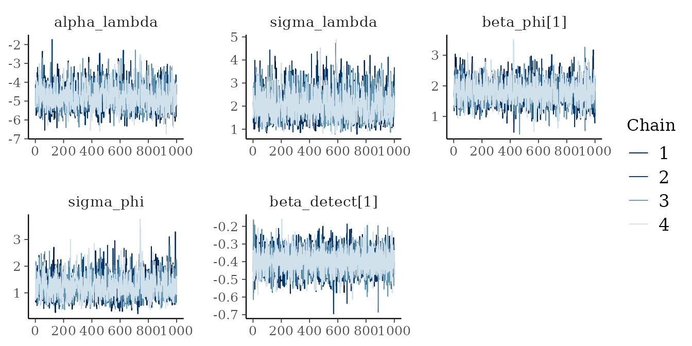
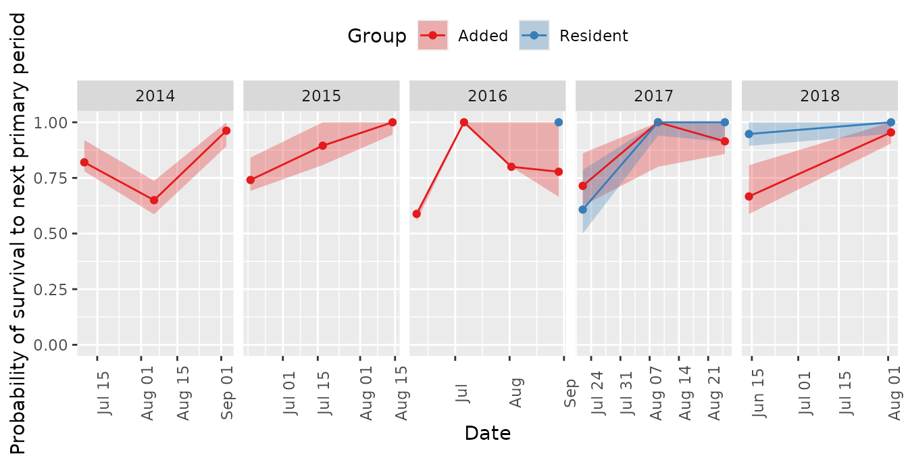
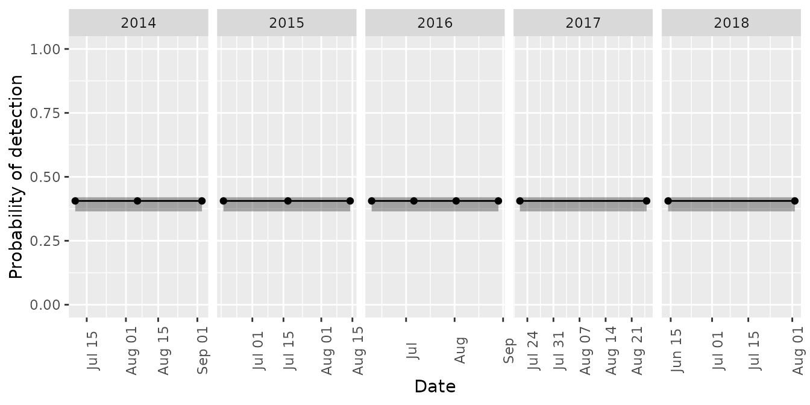
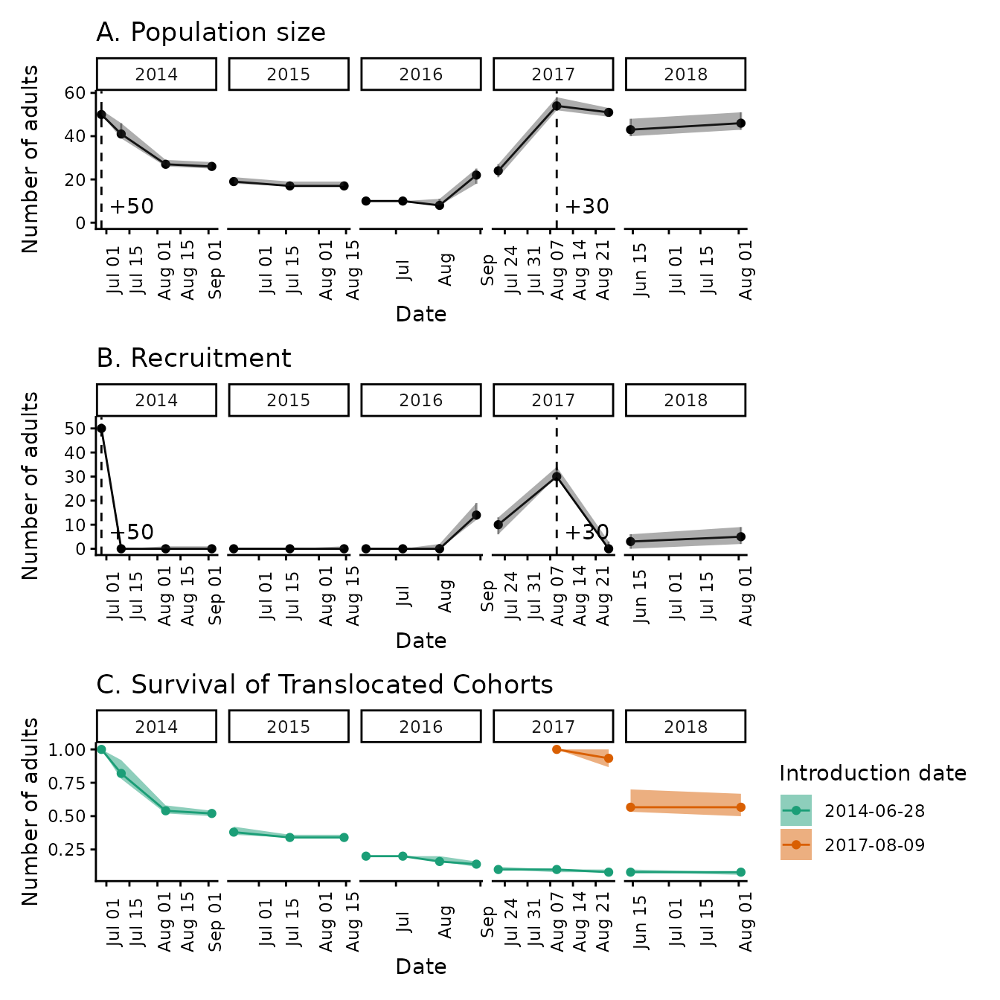

An introduction to mrmr2
intro-to-mrmr2.RmdThe mrmr2 package is designed to simplify and expedite
mark-recapture data processing, parameter estimation, and visualization
for a narrow class of mark-recapture data (namely, those collected by
researchers at the Mountain
Lakes Research Group (University of California, Sierra Nevada Aquatic Research
Laboratory). It extends the original mrmr package with
optional detection-heterogeneity random effects (see Detection random-effect models) and a
lower-memory survival plotting method, and can be installed alongside
mrmr without conflict. mrmr2 also incorporates
numerous code fixes and improved default plots.
Install latest versions of cmdstanr, cmdstan, and mrmr2 packages
The following code chunk only installs/updates a package if it’s missing or outdated – an already up-to-date package is left alone.
# install/update cmdstanr from its dedicated repository
remotes::update_packages("cmdstanr",
repos = c("https://mc-stan.org/r-packages/", getOption("repos")))
# install/update CmdStan itself
cmdstanr::install_cmdstan()
# install/update mrmr2 from GitHub
remotes::install_github("SNARL1/mrmr2")Workflow overview
The typical workflow involves three steps:
- Cleaning mark-recapture data with
mrmr2::clean_data() - Fitting a mark-recapture model with
mrmr2::fit_model() - Visualizing results with
mrmr2::plot_model()
Data specifications
The package comes with example data that illustrate the expected
format. Two files are required (describing captures and surveys) and two
files are optional (describing additions and removals). These files are
specified in the Data processing step and
are typically named something like
capture,survey, translocation,
and removal, but any names are acceptable.
The first file specifies capture data:
library(dplyr)
#>
#> Attaching package: 'dplyr'
#> The following objects are masked from 'package:stats':
#>
#> filter, lag
#> The following objects are masked from 'package:base':
#>
#> intersect, setdiff, setequal, union
library(readr)
library(tibble)
library(mrmr2)
library(ggplot2)
library(patchwork)
capture <- read_csv(
system.file(
"extdata",
"capture-example.csv",
package = "mrmr2"
)
)
#> Rows: 466 Columns: 8
#> ── Column specification ────────────────────────────────────────────────────────
#> Delimiter: ","
#> chr (2): frog_sex, frog_state
#> dbl (4): pit_tag_id, site_id, frog_weight, frog_svl
#> lgl (1): tag_new
#> date (1): survey_date
#>
#> ℹ Use `spec()` to retrieve the full column specification for this data.
#> ℹ Specify the column types or set `show_col_types = FALSE` to quiet this message.
capture <- capture |>
mutate(pit_tag_id = as.character(pit_tag_id))
glimpse(capture)
#> Rows: 466
#> Columns: 8
#> $ pit_tag_id <chr> "900043000104502", "900043000104502", "900043000104502", "…
#> $ site_id <dbl> 70449, 70449, 70449, 70449, 70449, 70449, 70449, 70449, 70…
#> $ survey_date <date> 2014-08-06, 2014-08-07, 2014-08-08, 2014-09-05, 2015-06-1…
#> $ tag_new <lgl> FALSE, FALSE, FALSE, FALSE, FALSE, FALSE, FALSE, FALSE, FA…
#> $ frog_sex <chr> "m", "m", "m", "m", "m", "m", "m", "m", "m", "m", "m", "m"…
#> $ frog_state <chr> "healthy", "healthy", "healthy", "healthy", "healthy", "he…
#> $ frog_weight <dbl> 16, NA, NA, 13, 15, 15, 16, NA, 18, NA, 23, 25, NA, 10, 13…
#> $ frog_svl <dbl> 51, NA, NA, 43, 51, 53, 56, NA, 56, NA, 56, 60, NA, 50, 50…Note that the system.file function generates a path to
the capture-example.csv file, but in a real application,
you would use a path to a local file (real data, not the example data
included in the package). The capture file must contain, at a minimum,
pit_tag_id and survey_date columns, but
additional columns can also be included (e.g., survival covariates). Each row in this file
represents a capture event, and only live individuals are included. Any
previously-tagged individuals found dead during during surveys can be
included in the removal file (see below).
The second file specifies survey-level data, and at a minimum it must
contain survey_date, primary_period, and
secondary_period columns:
survey <- read_csv(
system.file(
"extdata",
"survey-example.csv",
package = "mrmr2"
)
)
#> Rows: 51 Columns: 4
#> ── Column specification ────────────────────────────────────────────────────────
#> Delimiter: ","
#> dbl (3): primary_period, secondary_period, survey_duration
#> date (1): survey_date
#>
#> ℹ Use `spec()` to retrieve the full column specification for this data.
#> ℹ Specify the column types or set `show_col_types = FALSE` to quiet this message.
glimpse(survey)
#> Rows: 51
#> Columns: 4
#> $ survey_date <date> 2014-06-28, 2014-07-10, 2014-07-11, 2014-07-12, 2014…
#> $ primary_period <dbl> 1, 2, 2, 2, 3, 3, 3, 4, 4, 4, 5, 5, 5, 6, 6, 6, 7, 7,…
#> $ secondary_period <dbl> 0, 1, 2, 3, 1, 2, 3, 1, 2, 3, 1, 2, 3, 1, 2, 3, 1, 2,…
#> $ survey_duration <dbl> 0.00, 7.61, 7.00, 5.35, 7.33, 7.58, 8.16, 7.58, 7.85,…Each row is a unique survey. If translocations or reintroductions
occurred at the site, these actions need to be included in the
survey dataset, each as a typical survey event.
Specifically, survey_date and primary_period
values are provided, the primary_period value is sequential
with all survey records in the dataset based on visit_date,
and secondary_period = 0. Translocations/reintroductions
cannot occur during a primary period. Therefore, the
survey_date for translocation/reintroduction records cannot
overlap with the survey_date range of any primary
period.
The third file specifies translocation/reintroduction data, and at a
minimum it must contain release_date and
pit_tag_id columns:
translocation <- read_csv(
system.file(
"extdata",
"translocation-example.csv",
package = "mrmr2"
)
)
#> Rows: 80 Columns: 7
#> ── Column specification ────────────────────────────────────────────────────────
#> Delimiter: ","
#> chr (3): treatment, frog_sex, frog_state
#> dbl (3): pit_tag_id, frog_weight, frog_svl
#> date (1): release_date
#>
#> ℹ Use `spec()` to retrieve the full column specification for this data.
#> ℹ Specify the column types or set `show_col_types = FALSE` to quiet this message.
glimpse(translocation)
#> Rows: 80
#> Columns: 7
#> $ pit_tag_id <dbl> 9.00043e+14, 9.00043e+14, 9.00043e+14, 9.00043e+14, 9.000…
#> $ release_date <date> 2014-06-28, 2014-06-28, 2014-06-28, 2014-06-28, 2014-06-…
#> $ treatment <chr> "treated", "treated", "treated", "treated", "treated", "t…
#> $ frog_sex <chr> "f", "f", "m", "m", "m", "f", "f", "f", "m", "f", "f", "m…
#> $ frog_state <chr> "healthy", "healthy", "healthy", "healthy", "healthy", "h…
#> $ frog_weight <dbl> 11, 13, 12, 10, 10, 10, 11, 13, 13, 11, 10, 11, 11, 10, 1…
#> $ frog_svl <dbl> 46, 51, 44, 42, 44, 40, 45, 48, 49, 47, 48, 47, 46, 44, 4…Each row is an addition event of one unique individual. Because some mark-recapture datasets do not include translocations or reintroductions, this file is optional.
The fourth file specifies removal data and, at a minimum, contains,
removal_date and pit_tag_id columns. Each row
is a removal event of one unique individual, including previously-tagged
individuals collected for translocation to other sites and
previously-tagged individuals found dead during surveys. Because some
mark-recapture datasets do not include removals, this file is
optional.
removal <- read_csv(
system.file(
"extdata",
"removal-example.csv",
package = "mrmr2"
)
)
#> Rows: 5 Columns: 4
#> ── Column specification ────────────────────────────────────────────────────────
#> Delimiter: ","
#> chr (1): frog_state
#> dbl (2): site_id, pit_tag_id
#> date (1): removal_date
#>
#> ℹ Use `spec()` to retrieve the full column specification for this data.
#> ℹ Specify the column types or set `show_col_types = FALSE` to quiet this message.
glimpse(removal)
#> Rows: 5
#> Columns: 4
#> $ site_id <dbl> 70449, 70449, 70449, 70449, 70449
#> $ removal_date <date> 2015-06-18, 2015-06-18, 2015-06-18, 2015-06-18, 2015-06-1…
#> $ pit_tag_id <dbl> 9.00043e+14, 9.00043e+14, 9.00043e+14, 9.00043e+14, 9.00…
#> $ frog_state <chr> "dead", "dead", "dead", "dead", "dead"Data processing
To load and process the data, provide the data frames as named
arguments to the mrmr2::clean_data() function:
captures, surveys, additions
(translocations or reintroductions, optional), and removals
(optional). Note that these are the names clean_data()
requires for its arguments – they need not match the names you gave your
own data frames. For example, in the example below, the data frame
translocation (a name we chose when reading in the file
above) is passed as clean_data()’s additions
argument. clean_data() determines the role of each input
solely from these argument names, and will raise an error if any
argument is passed positionally instead of by name (e.g.,
capture instead of captures = capture):
data <- clean_data(
captures = capture,
surveys = survey,
additions = translocation,
removals = removal
)In some cases, there may be no introductions or removals of
individuals into/from a population. In such cases, the only difference
in implementation is that the additions and/or
removals arguments to clean_data() are
omitted.
The mrmr2:clean_data function performs several
data-preparation steps. It checks the capture, survey,
translocation/reintroduction, and removal data for common problems
(e.g., duplicate records, dead animals left in the capture data,
unparseable dates), and renumbers the primary periods and inserts a
placeholder pre-study period, and derives each period’s representative
survey date, year, and overwinter status from the provided dates. It
builds the individual-by-primary-period-by-secondary-period capture
history, then performs data augmentation: padding the observed
individuals with a large number of all-zero pseudo-individuals to form
the fixed-size superpopulation of
individuals referenced in Model structure
below. Finally, it constructs the detection and survival covariate
design matrices from the capture_formula and
survival_formula arguments, described in the Including detection/non-detecation
covariates and Including survival
covariates sections. The output provides data frames as list
elements, and a list element called stan_d, which contains
data that has been pre-processed for model fitting.
Including detection/non-detection covariates
Survey-level covariates that might affect the probability of
detection can be included via the capture_formula argument
to clean_data. Such covariates must be in the
surveys dataframe. Prior to using a column containing
continuous values as a covariate, it is important to rescale these
values to have mean = 0 and standard deviation = 1. Using a covariate
value like year, which typically has a mean in the
thousands and a standard deviation far from one may cause numerical
issues when fitting a model.
Covariate column names must be unique across all data frames supplied
to clean_data() (captures,
surveys, additions, and
removals). Internally, clean_data() joins
these data frames together using all of their shared column names as the
join key; if an added covariate shares a name with a column in another
data frame, it will unexpectedly become part of that join and can
silently produce incorrect results.
A detection covariate, such as survey_duration, can be
included as follows:
# center and scale the covariate
survey <- survey |>
mutate(c_survey_duration = c(scale(survey_duration)))
# specify the formula
data <- clean_data(
captures = capture,
surveys = survey,
additions = translocation,
capture_formula = ~ c_survey_duration
)Including survival covariates
Individual-level survival covariates can be included via the
survival_formula and survival_fill_value
arguments. Any variable named in survival_formula must be a
column in captures or additions – these are
the only two places clean_data() looks for individual-level
values – and must be fixed for each individual over the entire study.
The arguments must be specified together, because
survival_fill_value supplies the covariate value for every
individual the data says nothing about: the (typically numerous)
augmented pseudo-individuals, which were never captured and so can never
have a recorded value, and any real individual whose
captures/additions records lack the covariate.
In other words, survival_fill_value should be set to
whichever level the covariate takes on by default, in the
absence of an explicit value.
For example, suppose you want to evaluate the effect of an experiment
that was conducted on a subset of individuals. In that experiment, a
treatment is applied to half of the individuals in the subset
(“treated”) and the other half are “untreated” controls. For individuals
that were not part of the experiment and for pseudo-individuals, a
treatment value is absent (NA). Because the
pseudo-individuals stand in for the general population that might exist
but was never observed, and because an absent value already means
“untreated” for real individuals that were not part of the experiment,
the fill value should almost always be “untreated”:
# specify the formula
data <- clean_data(
captures = capture,
surveys = survey,
additions = translocation,
survival_formula = ~ treatment,
survival_fill_value = c(treatment = "untreated")
)Setting survival_fill_value = c(treatment = "treated")
would only be appropriate in the reverse situation, where “treated” is
the default for individuals that were not included in the experiment and
for the control individuals.
Pseudo-individuals make some survival covariates hard to include,
specifically when the covariate value assigned to a pseudo-individual
(via the survival_fill_value) is ambiguous. For example,
adding a sex covariate requires assigning a sex to every
pseudo-individual, but what sex to assign is ambiguous. One approach is
to assign sex based on sampling sex from the observed sex ratio, but
this assumes that the sexes have equal detectability. If this assumption
is violated, estimates will likely be biased. Given these challenges,
the best approach is include only covariates for which the
survival_fill_value is unambiguous (see example above).
Model structure
The mrmr2 package implements a Bayesian open-population
Jolly-Seber mark-recapture model with known additions to and removals
from the population. The model tracks the states of
individuals that comprise a superpopulation made up of real and
pseudo-individuals (see Joseph and Knapp 2018, Ecosphere for
details).
We assume a robust sampling design where the states of individuals are constant within primary periods, and primary periods have repeat secondary periods within them (during which observations are made). The possible states of individuals include “not recruited”, “alive”, and “dead”. The possible observations of individuals include “detected” and “not detected”. We assume that individuals that are in the “not recruited” or “dead” states are never detected (i.e., there are no mistakes in the individual PIT tag ID records).
For reference, the parameters estimated by the model are as follows:
| Parameter | Symbol | Model | Definition |
|---|---|---|---|
alpha_lambda |
\(\alpha_\lambda\) | all | Intercept of per-primary-period recruitment probability, on the logit scale |
sigma_lambda |
\(\sigma_\lambda\) | all | Standard deviation of the recruitment random effect (eps_lambda) across primary periods |
eps_lambda |
\(\epsilon_\lambda\) | all | Standardized per-primary-period random effect on recruitment probability |
lambda |
\(\lambda\) | all | Probability that an as-yet-unrecruited individual is recruited during a given primary period |
beta_phi |
\(\beta_\phi\) | all | Coefficients (intercept and any survival covariates) for survival probability, on the logit scale |
sigma_phi |
\(\sigma_\phi\) | all | Standard deviation of the survival random effect (eps_phi) across primary periods |
eps_phi |
\(\epsilon_\phi\) | all | Per-primary-period random effect on survival probability |
phi |
\(\phi\) | all | Probability that an alive individual survives from one primary period to the next |
beta_detect |
\(\beta_p\) | all | Coefficients (intercept and any detection covariates) for detection probability, on the logit scale |
sigma_detect_period |
\(\sigma_{p,\text{period}}\) | detect_re |
Standard deviation of the between-primary-period detection random effect (eps_detect_period) |
eps_detect_period |
\(\epsilon_{p,\text{period}}\) | detect_re |
Per-primary-period random effect on detection probability, shared by all surveys in that period |
sigma_detect_occasion |
\(\sigma_{p,\text{occasion}}\) | detect_re |
Standard deviation of the within-primary-period (per-survey) detection random effect (eps_detect_occasion) |
eps_detect_occasion |
\(\epsilon_{p,\text{occasion}}\) | detect_re |
Per-survey random effect on detection probability, nested within primary period |
sigma_detect_indiv |
\(\sigma_{p,\text{indiv}}\) | indiv_re |
Standard deviation of the individual-level detection random effect (eps_detect_indiv) |
eps_detect_indiv |
\(\epsilon_{p,\text{indiv}}\) | indiv_re |
Per-individual random effect on detection probability (individual detection heterogeneity, \(M_h\)) |
s |
\(s\) | all | Latent state of each individual (not yet recruited, alive, or dead) in each primary period |
N |
\(N\) | all | Estimated population size (number of "alive" individuals) in each primary period |
B |
\(B\) | all | Estimated number of newly recruited individuals in each primary period |
Nsuper |
\(N_{super}\) | all | Estimated superpopulation size: the total number of individuals ever alive during the study |
Model fitting
To fit a mark-recapture model, use mrmr2::fit_model().
This model accounts for known introductions into and removals from the
population, and has random effects to account for variation in survival
and recruitment through time. It is also possible to add random effects
to account for variation in detection at the
period (primary period), occasion
(secondary period), and individual level.
The default number of chains is 4. Generally, at least 1000 warmup and 1000 sampling iterations should be used; the example model below uses only 10 iterations of each to ensure a short run time.
# fit-model
mod <- fit_model(
data = data,
chains = 4,
iter_warmup = 10,
iter_sampling = 10
)To reduce mrmr2::fit_model() run times, use within-chain
parallelization by providing the following additional arguments:
-
cpp_options = list(stan_threads = TRUE)which compiles the model with threading support. -
parallel_chainsspecifies the number of chains to run in parallel, and must bechains. -
threads_per_chainis set to an integer value that ensures that all physical cores are used. The number ofparallel_chains×threads_per_chainmust equal the number of physical cores available. For example, on a machine with 8 physical cores, specify 4 chains, 4 parallel chains, and 2 threads per chain. On a machine with 16 physical cores, specify 4 chains, 4 parallel chains, and 4 threads per chain. In the following code chunk, threads per chain is set automatically based on the number of cores available.
# fit-model-threaded
# WARNING: This model run takes 10-20 minutes
mod <- fit_model(
data = data,
chains = 4,
parallel_chains = 4,
threads_per_chain = max(1, parallel::detectCores() %/% 4),
cpp_options = list(stan_threads = TRUE),
iter_warmup = 1000,
iter_sampling = 1000
)After the mrmr2::fit_model step completes, diagnose
potential non-convergence of the MCMC algorithm by inspecting traceplots
and Rhat values. Note that mod from the
fit-model code chunk above is fit with only 10 warmup and
10 sampling iterations, to minimize the run time of this step. As a
result of the limited number of iterations, the resulting traceplots and
Rhat values are not informative. To provide more useful diagnostics, the
traceplots and Rhat table below are based on mod from the
fit_model_threaded code chunk immediately above, which is a
more typical fit_model specification. To avoid this code
chunk’s 10-20 minute run time, it was pre-run and the saved model fit
was used to create the traceplots and Rhat table.

Signs of potential lack of convergence include any moments (e.g., mean or standard deviation) changing over time, and high within-chain auto-correlation. High within-chain autocorrelation means the sampler is exploring the posterior slowly (poor mixing), which reduces the effective sample size relative to the raw number of draws, and shows up in a trace plot as slow-moving, snake-like trends rather than a “hairy caterpillar” pattern that jumps around its mean quickly. Additionally, if multiple chains initialized with different starting values do not converge to similar equilibrium values, this may also suggest issues with convergence. These traceplots show typical “hairy caterpillar” patterns indicative of model convergence.
Here is the Rhat table. Rhat values 1.01 indicate of a lack of convergence.
#> # A tibble: 5 × 10
#> variable mean median sd mad q5 q95 rhat ess_bulk ess_tail
#> <chr> <dbl> <dbl> <dbl> <dbl> <dbl> <dbl> <dbl> <dbl> <dbl>
#> 1 alpha_lambda -4.77 -4.82 0.611 0.552 -5.66 -3.65 1.00 1324. 1796.
#> 2 sigma_lambda 2.04 1.96 0.596 0.575 1.21 3.16 1.00 1465. 2477.
#> 3 beta_phi[1] 1.80 1.79 0.361 0.345 1.23 2.39 1.00 2293. 2195.
#> 4 sigma_phi 1.22 1.17 0.408 0.387 0.640 1.94 1.00 1632. 2678.
#> 5 beta_detect… -0.398 -0.398 0.0652 0.0635 -0.506 -0.293 1.000 7004. 2820.If you run the fit_model_threaded chunk yourself, you
can generate the same diagnostics for your fit as follows:
pars_to_plot <- c('alpha_lambda',
'sigma_lambda',
'beta_phi',
'sigma_phi',
'beta_detect')
bayesplot::mcmc_trace(mod$m_fit$draws(pars_to_plot))
mod$m_fit$summary(pars_to_plot)Detection random-effect models
By default (model = "base"), detection probability is a
purely deterministic function of any covariates supplied via
capture_formula to clean_data(). With the
default capture_formula = ~ 1, every survey in the dataset
shares one scalar detection probability. Survival and recruitment, by
contrast, already have a random effect that lets them vary by primary
period. mrmr2::fit_model() offers two optional extensions,
selected with the model argument, that add an analogous
random effect to detection:
-
model = "detect_re"adds a between-primary-period random effect and a within-primary-period (per-survey) random effect to detection probability. Simulation work found this mainly corrects overconfident (too-narrow) uncertainty intervals on abundance (N) and recruitment (B) when true detectability drifts across periods or survey occasions — it has little effect on the point estimates themselves. -
model = "indiv_re"adds an individual-level random effect to account for some individuals being persistently harder to detect than others (e.g., due to body size, behavior, or microhabitat use). Unlike"detect_re", ignoring real individual heterogeneity of this kind causes a genuine negative bias in point estimates ofN— chronically hard-to-detect individuals get undercounted — matching classical closed-population heterogeneity (M_h) theory.
The following code chunk adds an individual-level random effect to detection probability
mod_indiv_re <- fit_model(
data = data,
model = "indiv_re",
chains = 4,
parallel_chains = 4,
threads_per_chain = max(1, parallel::detectCores() %/% 4),
cpp_options = list(stan_threads = TRUE),
iter_warmup = 1000,
iter_sampling = 1000
)These extensions are not free. Both take longer to fit than
"base", and "indiv_re" in particular produces
substantially larger saved fits, since its random effect has one entry
per individual in the augmented superpopulation (M,
typically several times the number of animals ever observed) rather than
one per primary period or survey. "detect_re"’s two
variance components are only weakly separable, which can trigger
divergent transitions when one of them is at or near zero;
fit_model() handles this automatically by defaulting
adapt_delta to 0.95 (rather than cmdstanr’s
usual 0.8) whenever model = "detect_re" and
adapt_delta is left unspecified.
One more caveat when interpreting a "detect_re" fit:
with only a few secondary surveys per primary period, the model can
attribute some of what is really per-survey
(sigma_detect_occasion) noise to the between-period term
(sigma_detect_period) instead, purely because a small
sample of occasion-level draws can look like a period-level shift by
chance. Before concluding there is genuine period-to-period variation in
detectability, compare the posterior for
sigma_detect_period against the noise floor it would show
even with no real period effect, roughly
sigma_detect_occasion / sqrt(J), where J is
the number of secondary surveys in a primary period. This between-period
versus survey-level ambiguity doesn’t bias N,
B, phi, or lambda — those depend
only on the sum of the two random effects — but it does mean the two
sigma estimates shouldn’t be read in isolation.
Additional details about the detect_re and
indiv_re models, including evaluation of outputs from model
runs using simulated and real data, are provided in An
Introduction to CMR Analysis Using the mrmr and mrmr2 Packages.
Built-in visualizations
Time series of population abundance, recruitment, and survival of
introduced cohorts are available through the
mrmr2::plot_model() function.
Population size
This plot shows the estimated total population size – the number of
individuals in the “alive” latent state – at each primary period,
summarized as a posterior median with a 95% credible interval band. It
uses posterior draws of the derived quantity N, computed
from the model’s latent state draws (s) for every
individual (real and data-augmented), since some individuals present in
the population are never captured. If translocation or reintroduction
data are present, dashed vertical lines mark when and how many
individuals were added, distinguishing external additions from
in-population recruitment.
plot_model(mod, what = 'abundance')
Recruitment
This plot shows the estimated number of individuals newly entering
the “alive” state (recruited into the population, whether through
in-population reproduction or translocation) at each primary period,
summarized as a posterior median with a 95% credible interval band. It
uses posterior draws of the derived quantity B, computed
from transitions in the model’s latent state draws (s)
between consecutive primary periods. As with the population size plot,
dashed vertical lines mark translocation/reintroduction dates when
addition data are present.
plot_model(mod, what = 'recruitment')
Survival
mrmr2 provides two survival plot types, both computed
from posterior draws of the latent state s restricted to
real (non-augmented) individuals. For sites with a large superpopulation
relative to the number of added (translocated/reintroduced) individuals,
this keeps memory use for this plot far below what it would be if the
full s array were pulled and then filtered down afterward
(see An
Introduction to CMR Analysis Using the mrmr and mrmr2 Packages for
details).
what = 'f_survival' plots the cumulative fraction of
each translocated or reintroduced cohort estimated to still be alive as
a function of time since release, so it requires addition data and only
describes those individuals (i.e., resident individuals are
ignored).
plot_model(mod, what = 'f_survival')
what = 'p_survival' plots the estimated period-to-period
survival probability for all individuals in the population – the
probability that an individual alive in one primary period is still
alive in the next. Each point is dated at the arrival primary
period rather than the departure one, so it reads as the probability of
having survived from the previous primary period to this one. For
example, an overwinter transition (survival from the last primary period
of year 1 to the first primary period of year 2) is attributed to the
first primary period of year 2, not the last primary period of year 1.
Because mod was fit without a
survival_formula, the model estimates a single,
population-wide survival probability for each primary period, shared by
every individual – so what = 'p_survival' plots one
ungrouped line:
plot_model(mod, what = 'p_survival')
If the model was instead fit with a survival_formula
(see Including survival covariates),
what = 'p_survival' plots one line per covariate category.
For example, to compare survival between translocated and resident
individuals, fit a model with a survival covariate that labels each
individual by subpopulation type. what= 'p_survival' now
plots a line for each group - translocated and resident. In this
example, note that if some translocated individuals are never captured
following release, they would have no row in capture to
indicate their group label (i.e., as translocated). Therefore, in this
case, the group column needs to be added to both the
capture and translocation dataframes.
capture <- capture |>
mutate(group = ifelse(pit_tag_id %in% translocation$pit_tag_id,
"translocated", "resident"))
translocation <- translocation |>
mutate(group = "translocated")
data <- clean_data(
captures = capture,
surveys = survey,
additions = translocation,
survival_formula = ~ group,
survival_fill_value = c(group = "resident")
)With this model, plot_model(mod, what = 'p_survival')
plots one line per group category (translocated
vs. resident), reflecting the model’s own group coefficient
in beta_phi, rather than an assumed grouping.
Detection
This plot shows the estimated probability of detecting an
already-alive individual at each primary period, summarized as a
posterior median with a 95% credible interval band. Unlike the survival
plots, it reads directly from the model’s saved
logit_detect parameter rather than from posterior draws of
the latent state s, and it only supports models fit without
detection covariates (capture_formula = ~ 1) – fitting one
causes an informative error, since detection covariates vary by survey
occasion, often continuously, rather than by a small number of
individual-level categories. The line is flat for
model = 'base', since detection probability is constant
across the study, but varies by primary period for
model = 'detect_re', which adds between- and within-period
random effects. For model = 'indiv_re', a second, wider
background ribbon is added showing the spread of individual-level
detection probabilities – flat across primary periods, since that random
effect has no time index, reflecting between-individual heterogeneity
rather than a trend over time.
plot_model(mod, what = 'detection')
Custom visualizations
The default plots can be customized using standard plotting functions:
p1 <- plot_model(mod, what = "abundance")
p1 <- p1 + ggtitle("A. Population size") +
ylab("Number of adults") +
expand_limits(y = 0) +
theme_classic() +
theme(axis.text.x = element_text(angle = 90))
p2 <- plot_model(mod, what = "recruitment")
p2 <- p2 + ggtitle("B. Recruitment") +
ylab("Number of adults") +
theme_classic() +
theme(axis.text.x = element_text(angle = 90))
p3 <- plot_model(mod, what = "f_survival")
p3 <- p3 + ggtitle("C. Survival of Translocated Cohorts") +
ylab("Number of adults") +
theme_classic() +
theme(axis.text.x = element_text(angle = 90))
p1 / p2 /p3
To save the custom plots (in .png, .pdf, and other formats):
ggsave("custom_plots.png", height = 6.5, width = 6.5)Plotting other parameters
Any of the plotting functionality that you would expect from a
stanfit model is available, by accessing the
m_fit list element from a model object. For example, we
could assess the posterior for the superpopulation size:
bayesplot::mcmc_trace(mod$m_fit$draws("Nsuper"))See Model structure for parameter names and definitions.
Translocation/reintroduction survival tables
If individuals were added to sites, you can generate a table of estimated survival through time for each introduced cohort (release date) as a function of years since introduction:
survival_table(mod, by_cohort = TRUE)
#> # A tibble: 7 × 5
#> years_since_introduction release_date lo_survival median_survival hi_survival
#> <dbl> <date> <dbl> <dbl> <dbl>
#> 1 0 2014-06-28 0.607 0.63 0.654
#> 2 0 2017-08-09 0.867 0.933 1
#> 3 1 2014-06-28 0.347 0.36 0.380
#> 4 1 2017-08-09 0.516 0.567 0.684
#> 5 2 2014-06-28 0.17 0.175 0.185
#> 6 3 2014-06-28 0.0867 0.0933 0.107
#> 7 4 2014-06-28 0.07 0.08 0.0902You can also get estimates of survival through time by individual:
survival_table(mod, by_individual = TRUE)
#> # A tibble: 310 × 6
#> years_since_introduction release_date pit_tag_id lo_survival median_survival
#> <dbl> <date> <chr> <dbl> <dbl>
#> 1 0 2014-06-28 9000430001… 1 1
#> 2 0 2014-06-28 9000430001… 1 1
#> 3 0 2014-06-28 9000430001… 1 1
#> 4 0 2014-06-28 9000430001… 0.333 0.333
#> 5 0 2014-06-28 9000430001… 0 0
#> 6 0 2014-06-28 9000430001… 0.333 0.333
#> 7 0 2014-06-28 9000430001… 0 0
#> 8 0 2014-06-28 9000430001… 0.333 0.333
#> 9 0 2014-06-28 9000430001… 1 1
#> 10 0 2014-06-28 9000430001… 1 1
#> # ℹ 300 more rows
#> # ℹ 1 more variable: hi_survival <dbl>